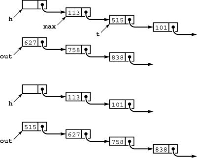

C++ Programming Robert Sedgewick - Princeton University Addison Wesley Professional Algorithms in C++, Parts 1–4: Fundamentals, Data Structure, Sorting, Searching, Third Edition
6.9. Sorting of Linked Lists
As we know from Chapter 3, arrays and linked lists provide two of the most basic ways to structure data, and we considered an implementation of insertion sort for linked lists as a list-processing example in Section 3.4 (Program 3.11). The sort implementations that we have considered to this point all assume that the data to be sorted is in an array, and are not directly applicable if we are working within a system that uses linked lists to organize data. In some cases, the algorithms may be useful, but only if they process data in the essentially sequential manner that we can support efficiently for linked lists.
Program 6.15. Linked-list–type interface definition|
This interface for linked lists can be contrasted with the one for arrays in Program 6.7. The randlist function builds a list of random items, including storage allocation. The showlist function prints out the keys in the list. Sorting programs use overloaded operator< to compare items and manipulate pointers to rearrange the items. The data representation for nodes is specified in the usual way (see Chapter 3), and includes a constructor for nodes that fills in each new node with the given value and a null link.
struct node
{ Item item; node* next;
node(Item x)
{ item = x; next = 0; }
};
typedef node *link;
link randlist(int);
link scanlist(int&);
void showlist(link);
link sortlist(link);
|
Program 6.15 gives an interface, which is similar to Program 6.7, for a linked-list data type. With Program 6.15, the driver program corresponding to Program 6.6 is a one-liner:
main(int argc, char *argv[])
{ showlist(sortlist(scanlist(atoi(argv[1])))); }
Most of the work (including allocation of memory) is left to the linked-list and sort implementations. As we did with with our array driver, we want to initialize the list (either from standard input or with random values), to show the contents of the list, and, of course, to sort it. As usual, we use an Item for the data type of the items being sorted, just as we did in Section 6.7. The code to implement the routines for this interface is standard for linked lists of the kind that we examined in detail in Chapter 3, and left as an exercise.
This interface is a low-level one that does not make a distinction between a link (a pointer to a node) and a linked list (a pointer that is either 0 or a pointer to a node containing a pointer to a list). Alternatively, we might choose to use a first-class ADT for lists and implementations that precisely specify dummy-node conventions, and so forth. The low-level approach that we are using makes it easier to concentrate on the link manipulations that characterize the algorithms and data structures themselves, our prime focus in this book.
There is a ground rule for manipulating linked structures that is critical in many applications, but is not always evident from our code. In a more complex environment, it could be the case that pointers to the list nodes that we are manipulating are maintained by other parts of the applications system (i.e., they are in multilists). The possibility that nodes could be referenced through pointers that are maintained outside the sort means that our programs should change only links in nodes, and should not alter keys or other information. For example, when we want to do an exchange, it would seem simplest just to exchange items (as we did when sorting arrays). But then any reference to either node through some other link would find the value changed, and probably will not have the desired effect. We need to change the links themselves such that the nodes appear in sorted order when the list is traversed via the links we have access to, without affecting their order when accessed via any other links. Doing so makes the implementations more difficult, but usually is necessary.
We can adapt insertion, selection, and bubble sort to linked-list implementations, although each one presents amusing challenges.
Program 6.16. Linked-list selection sort|
Selection sort of a linked list is straightforward, but differs slightly from the array version because it is easier to insert at the front of a list. We maintain an input list (pointed to by h->next), and an output list (pointed to by out). While it is nonempty, we scan the input list to find the maximum remaining element, then remove that element from the input list and insert it at the front of the output list. This implementation uses an auxiliary routine findmax, which returns a link to the node whose link points to the maximum element on a list (see Exercise 3.34).
link listselection(link h)
{ node dummy(0); link head = &dummy, out = 0;
head->next = h;
while (head->next != 0)
{ link max = findmax(head), t = max->next;
max->next = t->next;
t->next = out; out = t;
}
return out;
}
|
Selection sort is straightforward: We maintain an input list (which initially has the data) and an output list (which collects the sorted result), and simply scan through the list to find the maximum element in the input list, remove it from the list, and add it to the front of the output list (see Figure 6.16). Implementing this operation is a simple exercise in linked-list manipulation, and is a useful method for sorting short lists. An implementation is given in Program 6.16. We leave the other methods for exercises.
This diagram depicts one step of selection sort for linked lists. We maintain an input list, pointed to by h->next, and an output list, pointed to by out (top). We scan through the input list to make max point to the node before (and t point to) the node containing the maximum item. These are the pointers we need to remove t from the input list (reducing its length by 1) and put it at the front of the output list (increasing its length by 1), keeping the output list in order (bottom). Iterating, we eventually exhaust the input list and have the nodes in order in the output list.

In some list-processing situations, we may not need to explicitly implement a sort at all. For example, we could choose to keep the list in order at all times, inserting new nodes into the list as in insertion sort. This approach comes at little extra cost if insertions are relatively rare or the list is small, and in certain other situations. For example, we might need to scan the whole list for some reason before inserting new nodes (perhaps to check for duplicates). We shall discuss an algorithm that uses ordered linked lists in Chapter 14, and we shall see numerous data structures that gain efficiency from order in the data in Chapters 12 and 14.
Exercises |  6.64 Give the contents of the input list and output list as Program 6.16 is used for the keys A S O R T I N G E X A M P L E. 6.64 Give the contents of the input list and output list as Program 6.16 is used for the keys A S O R T I N G E X A M P L E.
| | 6.65 Provide an implementation for the linked-list interface given in Program 6.15. | | 6.66 Implement a performance-driver client program for linked-list sorts (see Exercise 6.9). | |  6.67 Develop a first-class ADT for linked lists (see Section 4.8) that includes a constructor for random initialization, a constructor for initialization via overloaded operator<<, output via overloaded operator>>, a destructor, a copy constructor, and a sort member function. Use selection sort to implement sort, with findmax as a private member function. 6.67 Develop a first-class ADT for linked lists (see Section 4.8) that includes a constructor for random initialization, a constructor for initialization via overloaded operator<<, output via overloaded operator>>, a destructor, a copy constructor, and a sort member function. Use selection sort to implement sort, with findmax as a private member function.
| | 6.68 Implement bubble sort for a linked list. Caution: exchanging two adjacent elements on a linked list is more difficult than it seems at first. | | 6.69 Package the insertion-sort code in Program 3.11 such that it has the same functionality as Program 6.16. | | 6.70 The insertion-sort method used in Program 3.11 makes the linked-list insertion sort run significantly slower than the array version for some input files. Describe one such file, and explain the problem. | | 6.71 Implement a linked-list version of shellsort that does not use significantly more time or space than the array version for large random files. Hint: Use bubble sort. | |  6.72 Implement an ADT for sequences, which allows us to use a single client program to debug both linked-list and array sort implementations. That is, client programs can create a sequence with N items (either generated randomly or filled from standard input), sort the sequence, or show its contents. For example, your ADT, in the file SEQ.cxx, should work with the following code: 6.72 Implement an ADT for sequences, which allows us to use a single client program to debug both linked-list and array sort implementations. That is, client programs can create a sequence with N items (either generated randomly or filled from standard input), sort the sequence, or show its contents. For example, your ADT, in the file SEQ.cxx, should work with the following code:
#include "Item.h"
#include "SEQ.cxx"
main(int argc, char *argv[])
{ int N = atoi(argv[1]), sw = atoi(argv[2]);
if (sw) SEQrand(N); else SEQscan();
SEQsort();
SEQshow();
}
Provide one implementation that uses an array representation and another that uses a linked-list representation. Use selection sort. | | 6.73 Extend your implementation from Exercise 6.72 such that it is a first-class ADT. Hint: Look for a solution in the Standard Template Library. |
|